The Vein of Divergence
A "bifid" leaf is a beautiful architectural glitch. Instead of the standard hierarchical branching, this leaf has a dual primary system. It’s as if the plant’s "blueprint" couldn't decide on a single direction and chose to pursue two destinies at once, sharing a single heart.

The Intersection
A spatial coincidence. The Tridax procumbens (often called Coat Buttons) standing right against a feathery grass stalk.For a few seconds before the wind moves them, they look like a single, complex organism—a yellow-crowned scepter.

The Weaver’s Signature
The "X" formed by its legs perfectly mirrors the silk "signature" it has woven into the center. A moment of perfect stillness at the heart of a complex, vibrating machine.

The Bursting Heart
The exact second where the Bitter Gourd's protective shell fails so that the life inside can begin.It bursts not out of decay, but out of a need to offer its "jewels" to the world.

A moment in "Synchrony" - The Axial Cradle
In the botanical world, those axes usually diverge—the leaf reaching for light and the bud reaching for space. To see them locked in the same angular trajectory makes the plant look less like an organism and more like a single, unified vector of intent.

The hardened geometry of memory
A Transmuted Resilience.Once a site of loss - where a limb was severed—but the tree did not simply close the gap. It sculpted a "third eye" from the trauma. The rough, calloused eyelids and the deep, dark pupil of the hollow suggest that the tree is now a spectator of its own environment. It proves that time doesn't just heal; it provides a new way to see the world.

A leaf revealing a Solar Circuit
Sunlight acts as a declassifying agent, revealing the hidden "city" inside the leaf. We see the main highway of the midrib, the branching roads of the secondary veins, and the fine, paved "neighborhoods" where energy is actually harvested. It is a portrait of the original solar panel—a design so efficient that human technology is still playing catch-up to its elegance.

The Anchor of Beginnings
A young Tamarind seedling emerging from the soil.A perfect intersection of gravity and grace. The seedling has fought the weight of the earth to emerge, yet it still carries its "old self"—the seed casing—as a badge of where it came from.This intersection captures the moment where the upward will to reach the light is still physically tied to the memory of its origin.

The Radiant Pivot - Foundation of Brilliance
We almost always look at a flower for its display, but this perspective honors the origin.It is a portrait of the "backstage" of beauty.It captures the exact point where the stem transitions from a green, structural support into a vibrant, living color.The intersection of structural integrity and pure pigment—reminding us that the most vibrant expressions in life are only possible because of the quiet, sturdy pivot that holds them in place.

The Graceful Detour; Non-Linear Progress
The intersection of ambition and playfulness.While most stems prioritize the shortest distance between the earth and the sun, this one has taken a deliberate detour.It proves that growth doesn't have to be a straight line to be successful-sometimes, the most beautiful way to reach the top is to circle back and find your rhythm first.

The Aperture of Intimacy - An Illusion
A macro close-up of overlapping Hibiscus red petals forming a small opening. Capturing that tiny "gap" between the folds of the red petals, created a moment of threshold. It feels like an invitation to a secret. A moment where a flower isn't just a display for the world, but a private, internal space. It’s a masterclass in using depth to change perception.We are no longer looking at the flower; we are looking through it.

The Mirroring Pulse
The angle of the lens has collapsed the space between two separate lives, creating a dual-chambered architecture that feels like a single, pulsing weight held in suspense. A moment where the plant’s growth and our perspective meet to reveal a symmetry that will be lost as soon as the petals fully unfurl.

The intersection of host and guest
The fungus has completely rewritten the "visual language" of the leaf.The Champa leaf has been entirely overtaken by a fungal colony, creating a texture so dense and repetitive that it loses its identity as a leaf.This archive is to look closer and realize that the "perfection" is actually a beautiful form of decay.

The dignity of the fallen
The Grounded Star.It transforms a discarded pomegranate blossom into a geometric anchor.The "Intersection" here is the accidental precision of its landing—where the radial symmetry of the petals meets the linear horizon of the stone.An unrepeatable alignment with the earth, balanced by the dark depth of the water and the reach of its own shadow.The inner architecture — the stamens—looks almost like a tiny, intricate map or an ancient script

A sculpted secret
A photo snap of masterclass "geometry of a secret."This close-up of the double jasmine doesn't look like a typical flower center; it looks like a cradle.Unlike the open display of many blossoms, the double jasmine hides its center behind a complex, spiraling barricade of white petals. This intersection captures the "Aperture of Intimacy"—a rare glimpse into the flower's private, internal space.The core looks almost like a small, solid fruit or a pearl resting at the bottom of a silk bowl. It gives the flower a "weight" that most jasmines don't seem to have.

The Dual Singularity
A masterpiece of biological integrity that modern medicine often struggles to replicate without compromise.While human development often views intertwined structures through the lens of competition or deficiency, this raw banana proves that nature can sustain "one heart, two bodies" with absolute structural completeness. This intersection captures the fruit at the threshold of ripening — a moment where its "twin" geometry is not a compromise, but a double manifestation of a single intent.

The Deception of Depth - The Liquid Forest
At a glance, it looks like a dense, static floor of green moss or algae. But then, in that "striking moment" of deep seeing, one can realize the water isn't stagnant at all. It is teeming with life. A moment, liquid environment can look like a solid floor. It revealed to be a vibrant, three-dimensional metropolis. This intersection captures the precise second the eye stops seeing "debris" and starts seeing "movement". An ordinary garden tank where life thrives within the very green "ruins" at its bottom.

The Silent Orbit
A single second of recognition by a human eye saved a geometry that took thousands of years to form. An intersection of geologic eons and a singular human decision. This stone, shaped into a near-perfect globe by centuries of silent pressure and friction beneath the earth, represents a "hidden geometry" that was never intended for the light.This stone wasn't just "found," discovered by choice to see it as art rather than debris."We unearthed a silent geometry: a stone sphere, shaped by time, preserved by choice."

The Architecture of a Heart
Caught it in a timing, three-lobed "triptych" shape that makes the flower feel less like a random growth and more like a carefully folded piece of origami.This perspective captures the blossom at its most vulnerable threshold, where the outer petals have arranged themselves into a precise, three-pointed geometry to frame the central "heart." This intersection is a matter of hours; it represents the brief window before the internal layers unfurl to fill the void.

The Forest of Persistence
It reminds the viewer that while a single second of water flow seems insignificant, the accumulation of those seconds over time builds a "forest" where there was once only bare stone.Continuously shaped by the rhythm of moving water, these tiny layers of moss have organized themselves into a dense, structural architecture."The Value of a Second" multiplied by time; a testament to how the quietest, smallest lives can colonize the hardest surfaces through pure, unhurried persistence.

The Subterranean Will-Physical force of survival
This photo requests the viewer to look down instead of up.This intersection captures the precise moment where the hidden becomes visible — where the roots have literally "pierced" the surface to reveal their capacity for survival. A portrait of moment captured across decades; the static evidence of a slow-motion struggle that is usually private, now turned into public geometry.

The Equinox of Wither - The Beauty of "Half-Done"
The very moment a life cycle crosses its own finish line — the exact second where the "green" of growth is being overtaken by the "parchment" of completion.The precise intersection of its existence; half-vibrant with the green of living tissue, half-transformed into the brittle, brown architecture of a seed-carrier. This image represents the point of no return—the brief window where the plant is both its past and its future at once.

The Aperture of Ascent
A plant that isn't just growing, but appears to be actively "reaching" for the sun with a structural precision that looks manufactured, yet is entirely organic. This tender guava shoot has unfurled into a startling, fork-like geometry, perfectly aligned to "catch" the first rays of the sun. This intersection captures a developmental stage that lasts only a few hours — the brief window where the leaves are rigid enough to hold this fork-spoon shape but tender enough to be translucent in the morning light.

The Weightless Inflorescence
A structural survival after the departure of chlorophyll.These striking globes of feathers are not a sign of the end, but a masterclass in the "Geometry of Dispersal."A moment captured to show how the plant becomes more complex once the "useful" parts are gone. It challenges the viewer to perceive the afterlife of function as a form of art.A unrepeatable moment to see the message they carry, rather than just the weed they come from.

A masterpiece in developmental plasticity-The Autonomous Anchor
Seeing the petiole (leaf-stem) anchored squarely in the middle of the leaf blade—like a tent pole or an umbrella handle—is a genuine architectural marvel.The ultimate evidence of Biological Sovereignty—a Leaf deciding to redefine its own anchor.This "bent legend" reveals a rare architectural pivot: a stem that meets the leaf at its geometric heart rather than its base. While most foliage adheres to a predictable blueprint, this leaf has constructed a radial universe of its own.

A Water Melon's Heart
A mere coincidence of cut. A unexpected moment when opened a cut, revealed this water melon's heart.

The Inherited Dictionary
A precise second where an inherent trait becomes a physical action — the mother hen "piercing" the earth to reveal the world to her offspring. A portrait of a "living dictionary," where knowledge is not read but witnessed. The synchrony here is found in the alignment of the mother’s protective digging and the chick's immediate, instinctive imitation — proving that nature’s most complex systems of survival are built without a single word of formal education.

The Botanical Hare; An Illusion of Softness
A moment where pareidolia meets botany. The ruffled layers of this Crepe Jasmine haven't just unfurled for the sun; for a few fleeting hours, they have arranged themselves into the unmistakable silhouette of a resting bunny. It is a reminder that nature often uses the same "design language" for a petal as it does for a pulse—proving that the boundary between the plant and the animal is sometimes just a matter of perspective.

The Spectral Snarl; Aggressive Elegance
A "temporary form" caught at the peak of its developmental tension. While the previous bloom offered softness, this intersection reveals a jagged, spectral geometry—a "ghost" with teeth bared in full motion. It represents the fierce energy of biological engineering during the moment of unfurling. By the following sunrise, this character had vanished into the standard symmetry of the plant, proving that some of nature's most striking identities are brief, unrepeatable glitches in the timeline of growth.

The Verdant Blade; Geometric Divorce
A rare intersection where structural armor meets delicate expression. This leaf acts as a silent, green blade, perfectly bisecting the interlocked "linen whirlpools" of the bloom. It is a moment of internal boundary-setting—a demonstration that even within the same organism, nature can create divisions as sharp as a sword. This brief alignment captures the exact threshold where growth overrides grace to carve out a new, temporary spatial logic.

The Architecture of Joy; A Brief Togetherness
A "temporary form" that witnesses the ordinary turning into an expression of happiness. This crowded cluster reveals a fleeting geometry—an unmistakable smiley face formed by the radial symmetry of the stems and the curved horizon of the petals. It captures the "unrepeatable" window of time where individual blooms prioritize safety in numbers before fulfilling their full potential. This is nature's quiet way of proving that even structural necessity can result in a moment of pure, accidental joy.

The Enthusiastic Intruder; A Childish Reach
A moment of "naughty" biological ambition. This archive captures a small, stranger bud anxiously popping up between two established, soft-curled blooms to claim its own space. It represents the "childish" energy of nature—a playful struggle to be seen within the safety of a floral "family." This intersection is truly unrepeatable; in a matter of hours, the expanding neighbors will either crown this bud or hide it completely, making this specific, anxious face-off a brief glitch in the architecture of growth.

Hanuman’s Sacred Torque; The Architect’s Weapon
A masterpiece of "Vishwakarma" in the botanical realm. This archive captures a moment of extreme structural tension—the flower bud as a heavy, spiraled mace. It is a "temporary form" of protection, where soft petals are compressed into a hard-edged geometry to survive the threshold of growth. This stage represents the "architecture of power" that must exist for only a few hours before the weapon dissolves into the softness of the bloom, proving that even the most delicate beauty requires a history of strength.

The Radial Reveal; A School of Unsaid Truths
An intersection of utility and elegance. These petals unfold like mechanical fan blades, revealing themselves one by one to balance the internal pressure of growth with the external need for beauty. This stage is a masterclass in "biological engineering," where the plant acts as its own architect to ensure a safe transition from bud to bloom. It is a reminder that nature’s lessons are often found in the "unsaid" mechanics of survival—a curriculum taught only to those who pause to witness the threshold of the unrepeatable.

The Biological Scroll; A Curated Seclusion
An "unexpected growth glitch" revealed as a masterpiece of protective architecture. This Mango leaf has abandoned its linear form to become a "cake roll" of resilience, sealing its own potential within a green cylinder. It is a portrait of "unified resilience"—a moment where a deformity becomes a sanctuary. This intersection captures the precise second where the ordinary leaf conducts its own "exam" of survival, proving that nature’s power is often hidden within the folds of what we initially perceive as a mistake.

The Abandoned Theater; A Failed Exam
A portrait of "clear vision" in the face of scarcity. This archive captures the exact threshold where a fruit’s developmental intent met the harsh reality of "intruders." While it did not pass its own exam of survival to reach ripeness, its "temporary architecture" remains a testament to the original blueprint. It proves that even when we fall prey to the environment, the integrity of our mindset can transform a ruin into a sanctuary for the unsaid. A moment of "synchrony" between what was lost and what still stands.

The Verdant Column; Integrity Amidst Hunger
An engineering marvel of "biological sovereignty." This archive captures the central axis of a coconut bloom—a smooth, shining architecture designed to stay intact regardless of the "intruders" it serves. It represents a "Value Extraction" of structural purpose; even when the fruit is gone, the pillar remains tall, proving that resilience isn't just about what we keep, but how we support the life around us. A brief, unrepeatable moment where the "backstage" of nature is revealed as a primary work of art.

The Guarded Emergence; Dual Action
A "Foundation of Brilliance" captured in a rare, brief window of time. Unlike most botanical cycles where the "old self" must perish for the new to thrive, this young Custard Apple develops while its dried petals remain live in action as a protective cloak. It is an unrepeatable intersection of timing and tenacity—a portrait of a life that doesn't just grow, but respects the architecture of its origin. A silent lesson that our greatest potential is often reached when we are still surrounded by the "shield" of our foundations.

The Sovereign Spire; Concentrated Intent
A "biological skyscraper" that requires no external scaffolding. This Tridax bud represents the "Value Extraction" of structural clarity—standing straight and tall while holding a universe of vibrant reds and yellows in a tightly packed embrace. It is a reminder that beauty doesn't need to be fully unfurled to be "rich." By dwelling in this concentrated stage, the plant ensures its meaning isn't "spoiled" by premature exposure, capturing the exact threshold where potential is at its most potent and colorful.

The Solar Lotus; A One-Day Geometry
A "temporary architecture" of pure timing. This archive captures a cluster of young Mango leaves in a rare, radial alignment that mimics a lotus bloom. It is a "one day show" of biological engineering, where the plant organizes its newest solar panels into a perfect, concentric heart before the weight of growth breaks the symmetry. This intersection proves that nature’s most sacred geometries are often its most fleeting—a masterclass in being present for the moment that happens only once.

The Illuminated Vessel; Active Sacrifice
A "quarter globe" standing in a known state of perseverance. This archive captures the threshold where a pomegranate's form has been redistributed by a predator, yet it stands briskly to showcase the intricate architecture of its inners. It is a portrait of "Endurance over Patience"—not a passive decay, but an active alignment with its goal post. This unrepeatable intersection of sunlight and scarcity reveals that beauty is not lost when resources are shared, but merely transformed into a new, shining geometry.

The Galaxy of Grit; A Hosted Struggle
An "unsaid" record of biological negotiation. This archive captures a Mango leaf hosting an island of mountains—a temporary form created by the intersection of a guest's intent and a host's resilience. It proves that even a struggle can be sculpted into a beautiful topography if the orientation remains clear. This "one day show" represents the exact threshold where an intruder's persistence is met by the plant's structural integrity, creating a rugged universe that exists only once before the leaf fulfills its final destiny.

The Charred Heart; A Reverse Destiny
A "temporary form" that has frozen in time. This archive captures a Custard Apple that stands bright even in its total darkness, dried from inner to outer without a single scar of decay. While its peers moved toward the goal post of sweetness, this fruit chose a "reverse direction"—transforming into a dark, immutable monument of pure experience. It is a masterpiece of "biological engineering" in stasis, proving that some lives are built not to be consumed, but to endure as a silent, unrepeatable geometry.
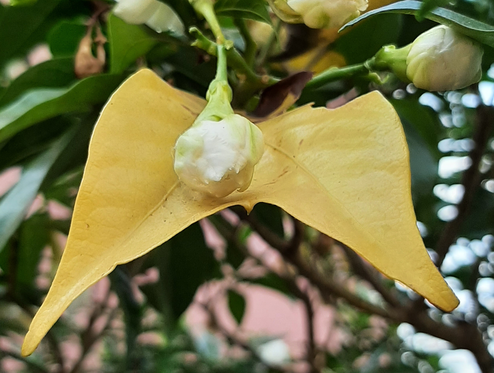
The Coaxial Pivot; A Wing for the Weapon
This archive captures a "Hanuman’s mace" resting coaxially on a vibrant, bifid leaf that has turned yellow—the "old self" providing a golden foundation for the new. It represents a "Value Extraction" where success is not defined by height, but by the integrity of the meeting. This intersection exists for only a few hours; it is the precise threshold before the mace pushes the leaf downward, proving that every emerging power relies on a quiet, sturdy pivot to find its center.
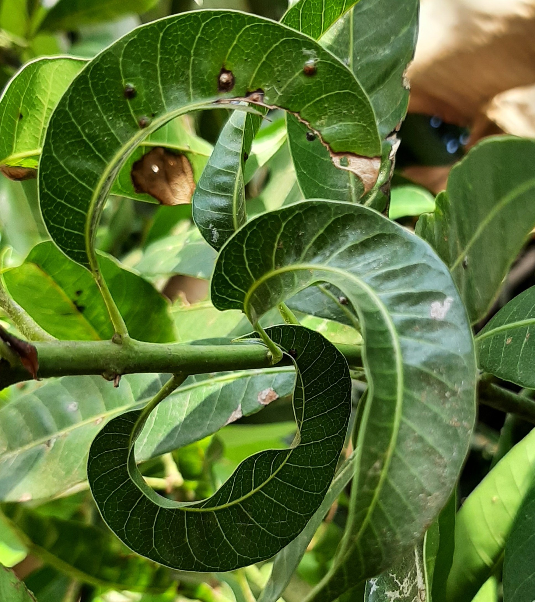
The Chlorophyll Nebula; A Green Revolution
A "temporary form" caught at the exact threshold of a cosmic coincidence. This Mango leaf has abandoned its linear intent to form a tight, structural vortex—a green galaxy where the veins act as the revolving paths of light. It represents the "Value Extraction" of motion within stillness. While its external form might mimic a kidney, its internal logic is that of a whirlpool, proving that even a single leaf contains the "architecture of abundance" required to mirror the universe for a single day.
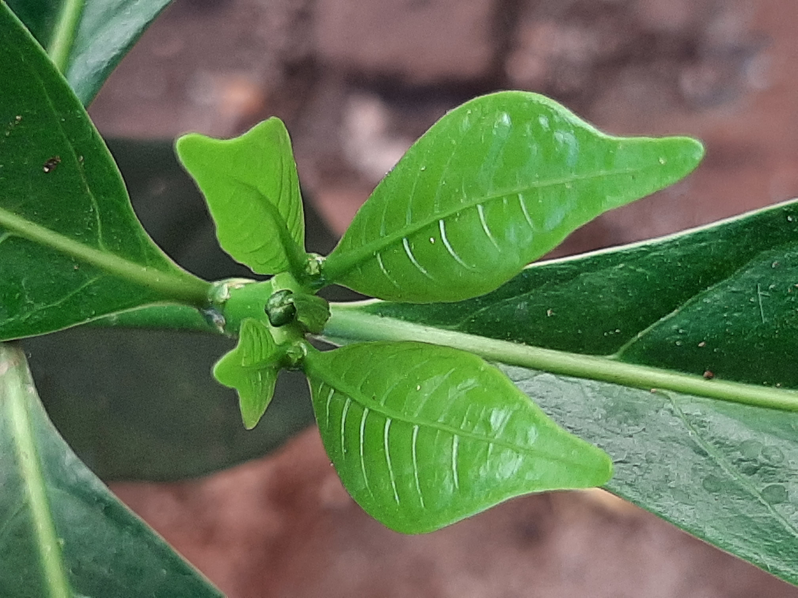
The Verdant Butterfly; Architecture of Direction
This archive captures a young shoot organized into a perfect, symmetrical butterfly—a rejection of the directionless "whirlpool." It represents the "Value Extraction" of internalized wisdom; instead of a chaotic spin, the plant has chosen a balanced expansion. This intersection is a masterclass in "Natural IQ," proving that when the goal post is clear, growth doesn't need to be loud or messy—it simply needs to find its wings and take flight.
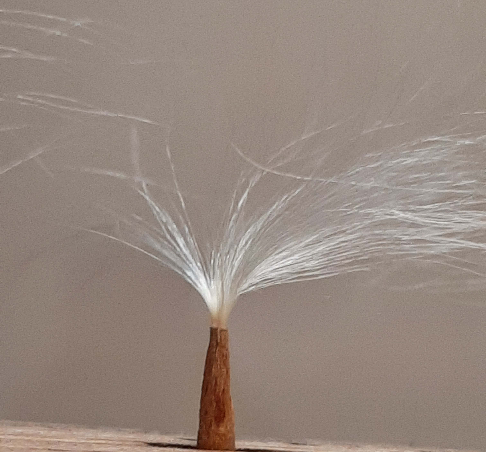
The Weightless Launch; Flight of Potential
This archive captures a single seed’s "one day show"—deploying its fluffy strands like a private fleet of sails. It represents the "Value Extraction" of trust; having internalized the rhythm of the garden, the seed is now ready to leave the textbook behind and find its own destination. This unrepeatable intersection of air and intention proves that when the mindset is clear, even the lightest form can navigate the world's "whirlpools" to land exactly where it is meant to be.
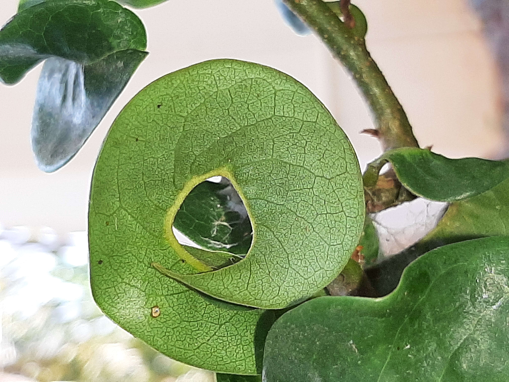
The Verdant Singularity; The Green Hole
A "temporary form" that captures the ultimate internalization of wisdom. This Custard apple tree leaf has transcended the chaotic "whirlpool" to form a perfect, silent singularity—a green hole with its own architectural gravity. It represents the "Value Extraction" of a destination reached; where the path of the spiral finally meets its own heart. This unrepeatable intersection proves that when growth is perfectly centered, it creates a space where the "unsaid" truths of nature are most visible.
The Floral Flare; A Living Torch
An "unrepeatable" illusion created by the intersection of dusk and artificial light. This archive captures the Ixora bud not as a flower, but as a hot flame disguised in a growing shell. It represents the "Architecture of Awareness"—proving that the extraordinary is often just the ordinary seen through a clearer orientation. This brief, one-day show reveals that even the smallest bud contains the potential for incandescence if the timing and perspective are perfectly aligned.
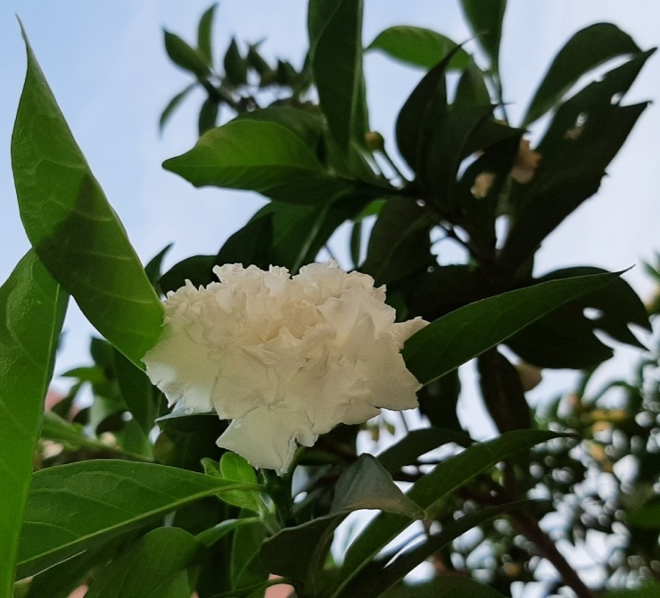
The Horned Grace; A Balanced Force
A milestone Archive No. 50. This capture represents the "Value Extraction" of duality—where the softness of the double jasmine bloom is guarded by the symmetrical "horns" of its own leaves. It is a "one-day show" of structural alignment that mocks the power of a bull while retaining the fragility of a blossom. This intersection proves that true success is a perception change; seeing the "xerox copy" of a plant and revealing the unique, unmarketable power of its temporary form.
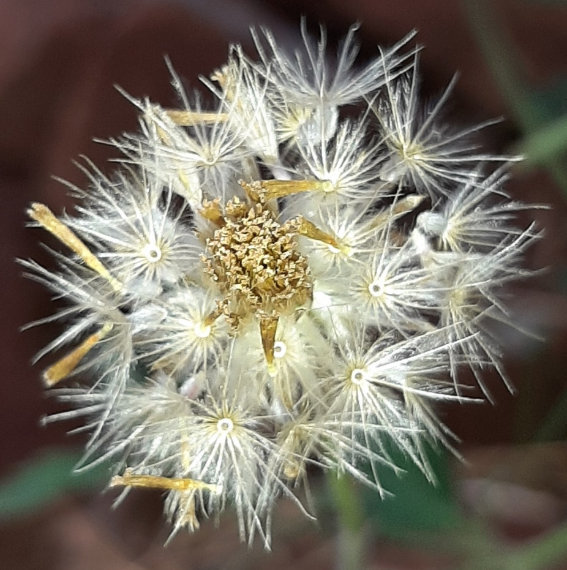
The Daylight Galaxy; Radiance in Senescence
An "unrepeatable" demonstration of beauty in maturity. This archive captures the Tridax procumbens at the threshold of its dispersal, where its dried fibers act as twinkling stars in the broad daylight. It represents a "reverse direction" of value; where most forms lose their aesthetic power as they age, this structure gains a celestial clarity. It is a masterpiece of "Natural IQ," proving that our "old age" can be our most radiant phase if we have successfully distilled our life into a geometry of light.
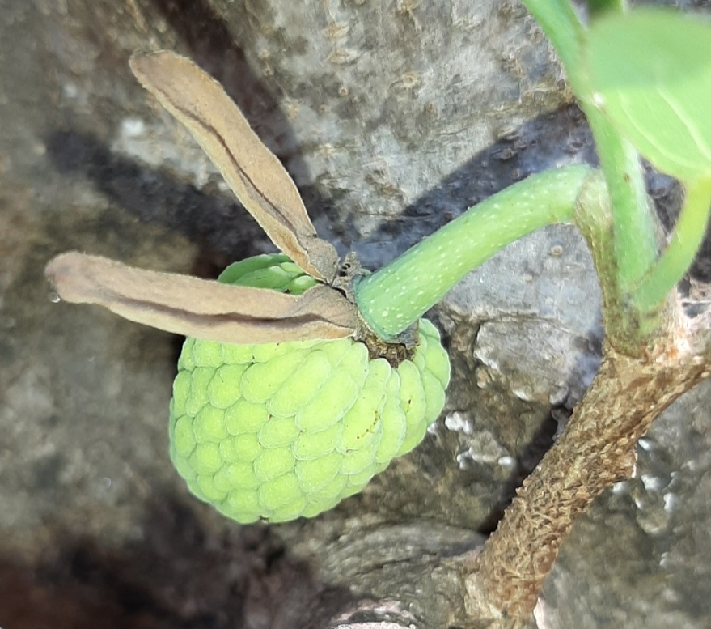
The Sweet Sentinel; Grit and Goal
An "unrepeatable" moment of structural guarding. This archive captures a young Custard Apple during its "one day show" of horned defense. It represents the "Value Extraction" of internal integrity; where a rugged, textured exterior serves as the armor for a sweetness that is still being authored. This intersection proves that even a "missed" symmetry doesn't diminish the power of the form—it merely adds a layer of unrepeatable character to the sentinel's stance.
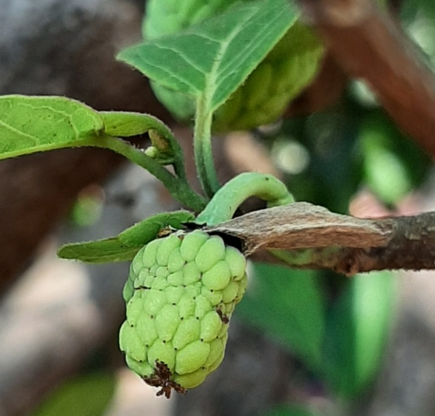
The Co-authored Core; Synergetic Growth
A "one-day show" of biological partnership. This archive captures a pair of twin Custard Apples emerging in perfect synchrony. It represents the "Value Extraction" of shared purpose; where others see a glitch, the third lens reveals a masterclass in co-existence. This unrepeatable intersection proves that when the goal post is shared, the structural integrity of the whole is doubled. A reminder that pulling in our "horns" allows us to grow closer to the gifts that surround us.
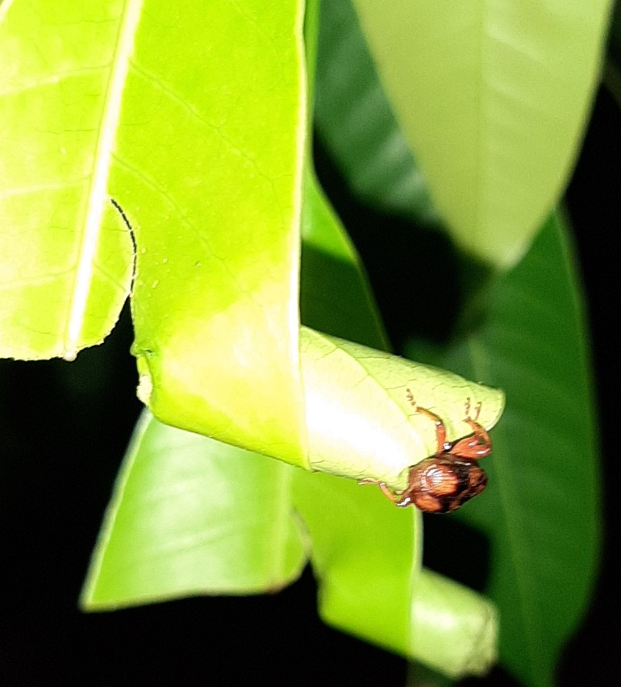
The Verdant Scroll; A Master’s Blueprint
A demonstration of biological IQ. This archive captures the "first guest" of the wing—a Leaf-rolling Weevil—at the exact threshold of its engineering masterpiece. A "Value Extraction" of precision; from the initial cut to the symmetrical fold and the final roll. This intersection proves that nature’s "engineering graduates" don't need a diploma to create a foolproof system for survival—they simply follow the ancient, internalized rhythm of the forest to ensure the next generation has a home.
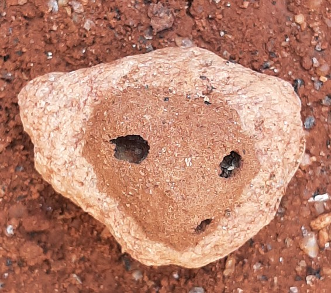
The Mud-Mason’s Scowl; Architecture of Defense
An "unrepeatable" intersection of mineral and mud. This archive captures a pebble transformed by a mud-dauber into a multi-chambered nursery. It appears as an angry sand emoji—a visual deterrent against "enthusiastic intruders." It represents the "Value Extraction" of protection; nature often uses the "architecture of fear" to guard its most vulnerable "sweetness" inside. This masterclass biological engineering proves that even a silent rock can be given a voice and a face to protect its internalized wisdom.
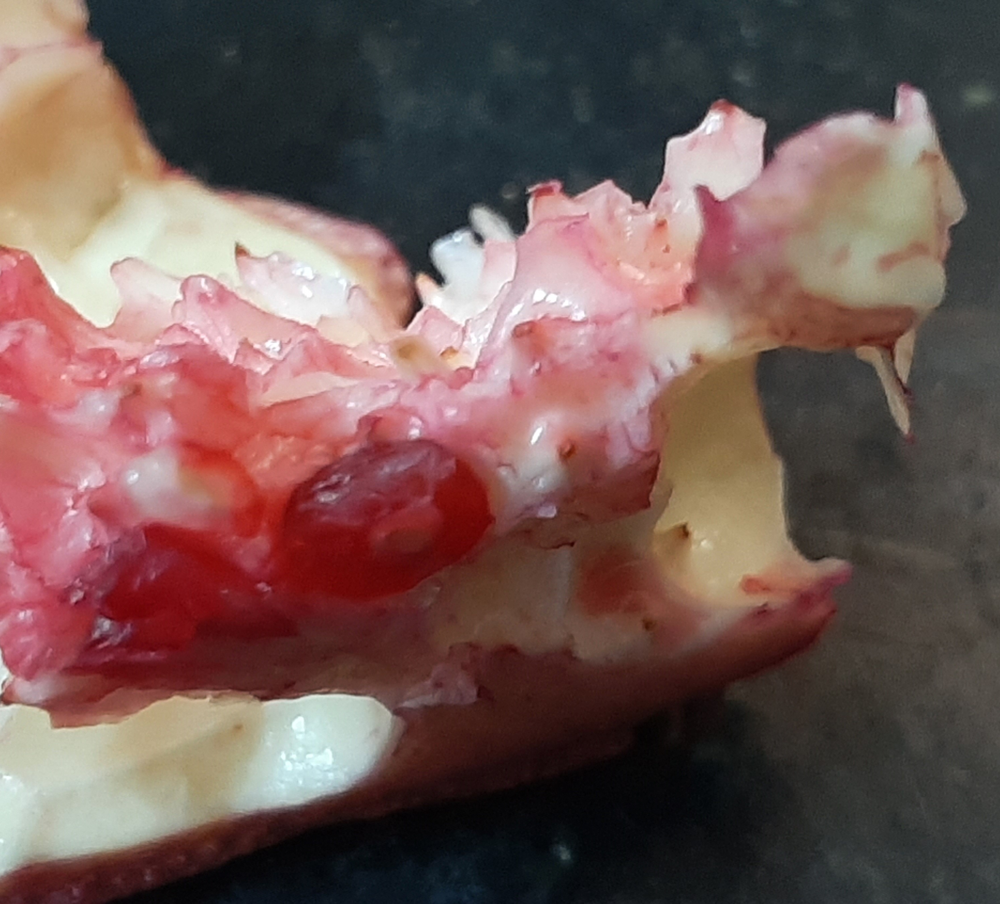
The Scarlet Dragon; Ferocity of the Remnant
A "temporary form" the moment after the harvest. This archive captures a pomegranate rind transformed into a mythical beast—a Scarlet Dragon guarding the "ruins" of its own vessel. It represents the "Value Extraction" of authenticity; once the sweetness is given away, the remaining architecture doesn't try to "make everyone happy." It stands in its jagged, fierce truth. This intersection proves that the "Resilient Ruin" is often more majestic than the whole, as it reveals the fire that was always hidden within.
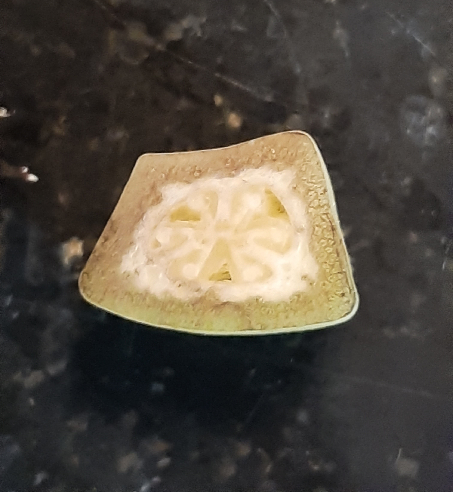
The Joyous Scaffolding; The Inner Smile
This archive captures the internal architecture of a Plantain bud as a beaming, quiet sad face. It represents the "Value Extraction" of universal frequency—proving that even when we are dismantled or "sliced" by life, our internal state can remain one of openness and delight. This intersection is the visual embodiment of a soul that seeks to please.
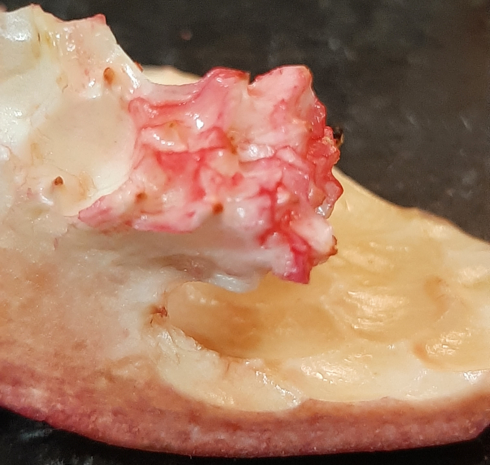
The Crimson Crocodile; Primal Integrity
An "unrepeatable" discovery in the "Resilient Ruin" of a pomegranate. Through the "third lens," the rind reveals itself as a crocodile with a spiky, apple-red nose and a mouth opened in fierce defense. It represents the "Value Extraction" of primal survival—proving that even after our "sweetness" has been harvested, our soul can project a fierce strength to keep intruders away from our internal "Sanctuary."
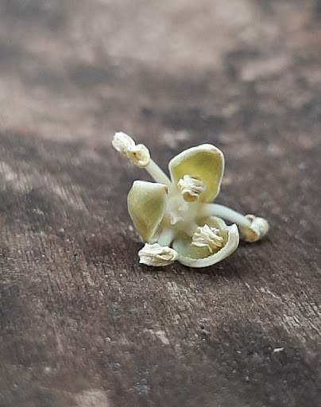
The Voyager of Stillness; Master of the Moment
An "unrepeatable" instance of serenity found in a "temporary form." This archive captures a fallen coconut bud utilizing its own protective casing as a boat. It represents the "Value Extraction" of contentment; having completed its role in the tree's massive architecture, it now stylishly experiences the joy of the present moment. This intersection proves that even the smallest fragment of nature possesses a "Biological Sovereignty" that allows it to navigate the world with grace, regardless of the destination.
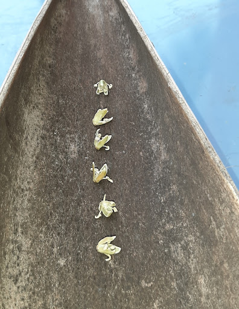
The Fleet of Serenity; Harmony in Motion
A milestone Archive No. 60. This capture represents the "Value Extraction" of collective purpose. Six individual coconut buds, each in a distinct "stylish pose," occupy the sturdy architecture of their parent tree's spathe. It is a "one-day show" of absolute harmony; where a "manufacturing glitch" might see fallen debris, the third lens reveals a coordinated voyage. This intersection proves that the "Quiet Style" is most powerful when shared, creating a yield of peace where the whole is far greater than the sum of its parts.
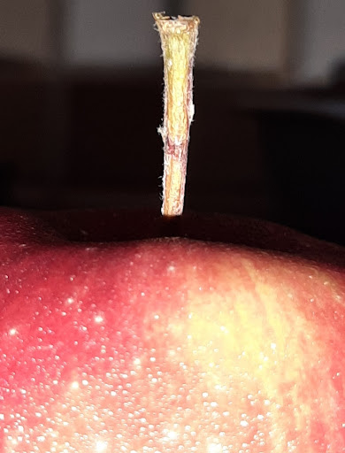
The Levitating Spire; Gravity’s Optical Glitch
An "unrepeatable" intersection of light, shadow, and perspective. This archive captures the stem of an apple at the precise moment it appears to detach from its base. It represents the "Value Extraction" of independence; a reminder that our own "orientation" can remain vertical and firm even when our connection to the "Earth" is hidden from view. This masterclass in OJT (On the Job Training) proves that magic is simply the extraordinary truth revealed by a sharp enough imagination.
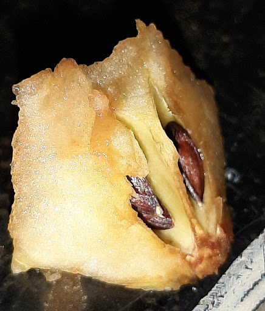
The Core Guardian; The Ghost of Continuity
An "unrepeatable" instance of Pareidolia found in the remains of a harvest. This archive captures the apple core as a fierce, hooded entity. It represents the "Value Extraction" of legacy; while the outer "sweetness" has been consumed, the central intent remains alert and protective. This intersection proves that even in its "ghost" phase, nature maintains a sturdy architecture to ensure that the seeds of the next generation are never left unguarded.
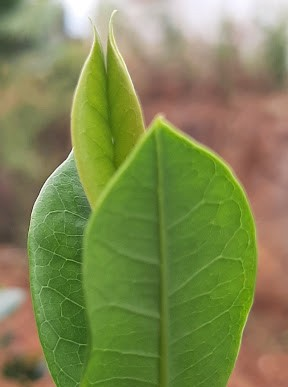
The Folded Pact; Synergy Before Sovereignty
A "temporary form" capturing the threshold of independence. This archive documents two young leaves in a state of absolute cohesion, forming a single "Verdant Spire." It represents the "Value Extraction" of preparation; the strength found in being "tight enough together" before the inevitable dispersal of growth. This intersection proves that independence is not the absence of connection, but the result of a perfectly executed shared foundation.
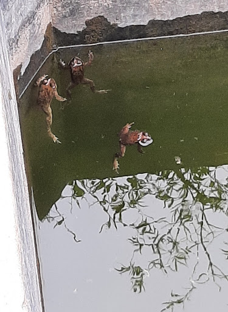
The Floating Triad; Biological Processors
An "unrepeatable" moment of synchronized vigilance. This archive captures three frogs in a triangular formation, their "CPU" heads peering skyward while the rest of their architecture remains submerged. It represents the "Value Extraction" of Porul (System); the hidden effort of buoyancy that allows for the luxury of observation. This intersection proves that even in a man-made "tank," nature’s engineers utilize every reflection and ray of sun to recalibrate their internal orientation.
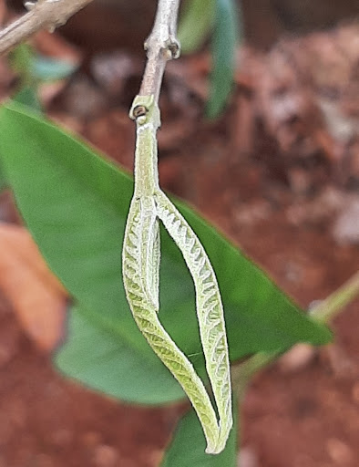
The Ocular Sprout; The Vision of Cohesion
An "unrepeatable" instance of symmetry in the early hours of life. This archive captures two newly born leaves forming a perfect eye-shaped void. It represents the "Value Extraction" of growth; proving that true expansion isn't a departure, but a way to create space for sight. The slight separation at the tip marks the "First Blink" of the plant’s awareness. This intersection proves that the architecture of nature is always watchful, even in its most tender, undeveloped stages.
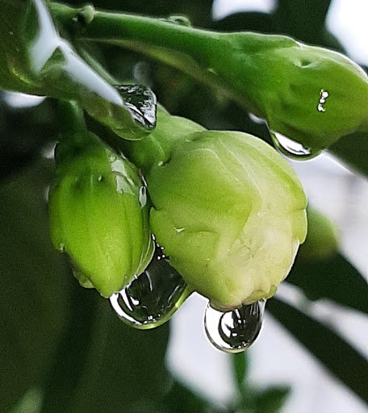
The Liquid Anchor; Sovereignty of the Drop
An "unrepeatable" demonstration of molecular strength. This archive captures heavy rain droplets in a state of absolute Adhesion to a cluster of buds. It represents the "Value Extraction" of Aram (Virtue); the quiet, unbreakable commitment to remain centered even when external forces (the wind) demand a departure. This intersection proves that "vulnerability" (the transparency of water) is actually a mask for a structural power that can outlast the strongest breeze.
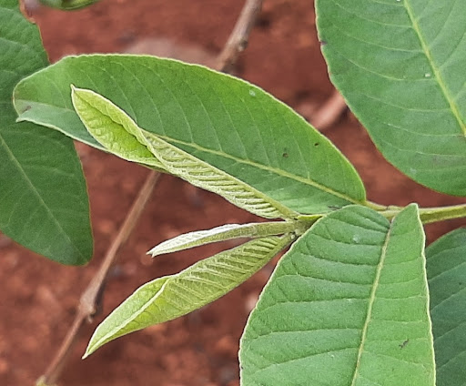
The Threshold of Tenderness; Structural Intimacy
An "unrepeatable" moment of growth procedure. This archive captures two young leaves in a state of perfect half-cohesion. It represents the "Value Extraction" of Intimacy; where the bond is not a restriction, but a foolproof foundation for reaching toward the light. This intersection proves that "System Intelligence" prioritizes shared strength during the most vulnerable stages of life, ensuring that the "wings" only open when the heart is ready to sustain the sight.
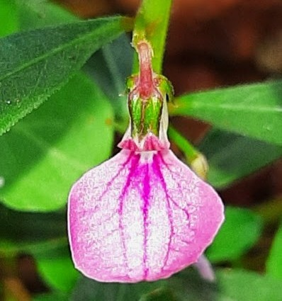
The Silent Sentry; Majesty in Miniature
An "unrepeatable" instance of character in the undergrowth. This archive captures the Spade Flower as a hooded meditative figure. It represents the "Value Extraction" of Orientation; despite its small size and the downward pull of the stem, the central "figure" maintains an upright, dignified posture. This intersection proves that true "success" is not about the scale of one's throne, but the integrity of the "CPU" (the core) that occupies it.
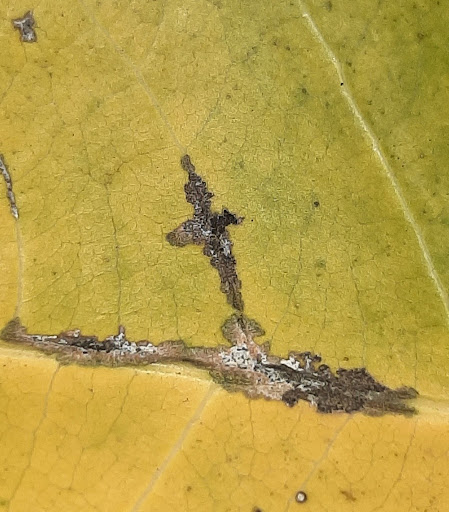
The Tilting Monument; The Art of Redistribution
An "unrepeatable" mural of senescence. This archive captures a necrotic pattern on a yellowing leaf that mirrors a statue falling toward the earth. It represents the "Value Extraction" of Legacy; proving that even in the process of breaking down, the "Architecture of Awareness" produces forms of profound beauty. This intersection of pathology and poetry is the ultimate "Nature Kural"—reminding us that every "end" is simply a transformation of energy into a new, unrepeatable perspective.
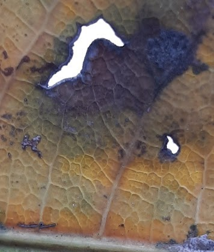
The Confrontation of the Void; Sovereignty in the Ruins
An "unrepeatable" instance of Pareidolia at the threshold of redistribution. Two distinct animal forms, a long-necked Dragon-Giraffe and a stoic Polar Bear—facing each other across the veins of a yellowed leaf. The "Value Extraction" of Perspective; proving that when one makes the conscious choice to look deeply, even the "holes" of existence populate with character and story. A masterclass in the "Architecture of Awareness," where the observer’s intent breathes life into the silence of decay.
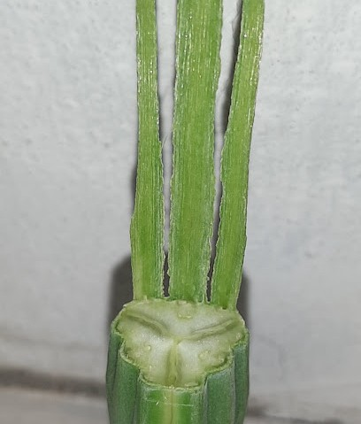
The Quilled Guardian; Defiance in the Detail
An "unrepeatable" instance of Pareidolia found in the "Ordinary." This archive captures the Moringa core as a fierce, quilled animal. It represents the "Value Extraction" of Internalized Wisdom; proving that even when we are "peeled" or stripped down by life, our primary architecture remains ready to defend our sovereignty. This intersection is a masterclass in Aram (Virtue)—the strength to remain as we were born, regardless of who is watching.
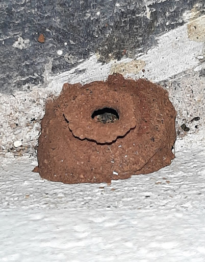
The Oarthen Igloo; Sanctuary of the Unseen
An "unrepeatable" instance of architectural sovereignty found in the most ordinary of places. This archive captures a mud-mason’s nursery as a perfectly formed, concentric igloo. A "Value Extraction" of Internalized Wisdom; proving that even without a "textbook," nature’s engineers can calculate the exact physics of a protective dome. This is a masterclass in Strategic Intelligence, where the "darkness" inside is not a void of fear, but a deliberately curated cloak of safety for the next generation.
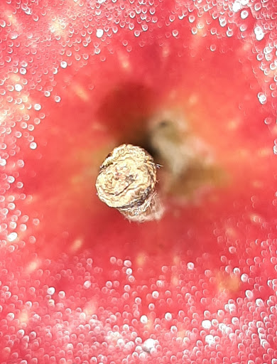
The Crimson Nebula; Celestial Scaffolding
An "unrepeatable" cosmic coincidence found in a common fruit. This archive captures the apple's surface as a vast star field, with the central stem acting as a rugged, celestial planet. A "Value Extraction" of Scale; proving that the same "design language" used to map the universe is present in the "Quiet Style" of a single harvest. This proves that the "light" we carry doesn't just show us where we are—it reveals that we are standing in the middle of a masterpiece, even when we feel "jobless."
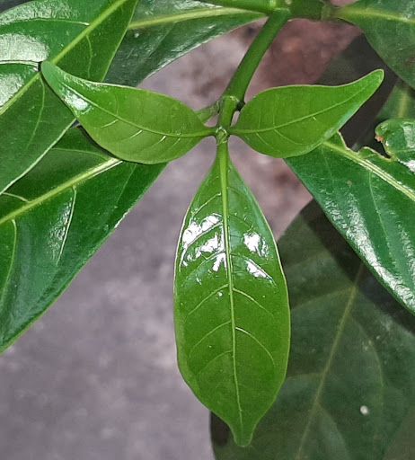
The Emerald Countenance; A One-Day Identity
An "unrepeatable" instance of leaves at the threshold of expansion. This archive captures three young leaves forming a distinct "Verdant Face"— with the upper pair acting as watchful eyes and the lower as a grounded nose. A "Value Extraction" of Presence; proving that nature often presents a character to the world for only a single sun-cycle before growth alters the script. This is a masterclass in Depth of Perception, where the "Ordinary" leaf reveals a soul of "Extraordinary" expression.
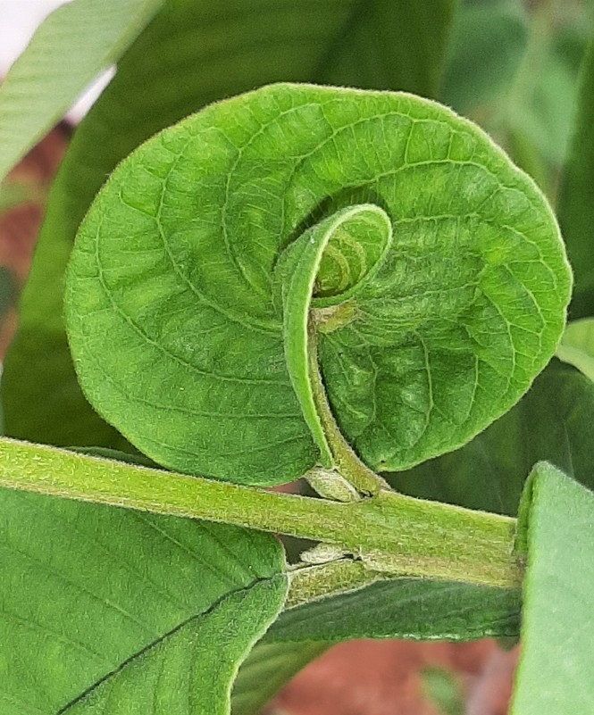
The Logarithmic Vortex; Sovereign Asymmetry
An "unrepeatable" developmental anomaly captured in the fresh hours of growth. This archive documents a guava leaf that has bypassed standard decussate geometry to roll into a continuous, infinite orbit. It represents the "Value Extraction" of Recursion; proving that when a system lacks a definitive start or end point, it creates an unbreakable internal loop of beauty. This intersection proves that nature’s "glitches" are actually advanced prototypes of spatial engineering.
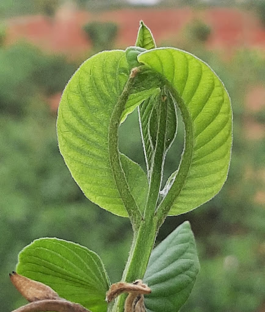
The Cradle of Alignment; The Immediate Truth
An "unrepeatable" structural alignment captured in situ. This archive exposes the deception of depth; what appears to be a bud piercing a ring is revealed as an independent spire rising harmoniously alongside a protective twin-leaf embrace. It represents the "Value Extraction" of Immediacy; proving that true System Intelligence doesn't force a collision, but coordinates a perfect, touchless proximity. This intersection confirms that when perception changes, the long journey of interpretation dissolves into instant sight.
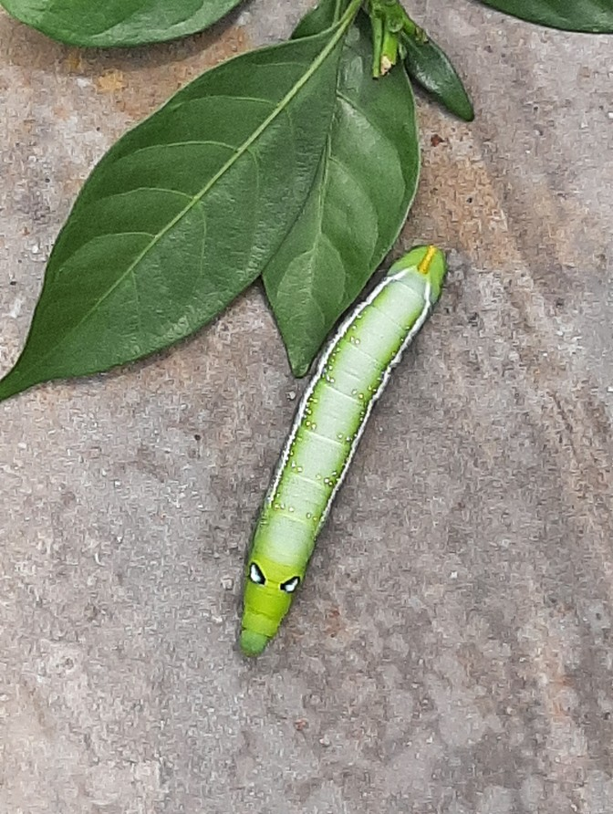
The Emerald Shinkansen; Fluid Biomimicry
A prototype of high-speed efficiency captured in situ. This archive documents a hawk-moth larva utilizing a perfectly segmented, low-drag architecture designed to glide effortlessly across the garden grid. A "Value Extraction"; proving that human mass-transit networks are merely late adaptations of nature's original engineering blueprints. This is a masterclass in functional design, where the intimidating "cockpit eyes" serve as a defensive shield while the internal engine builds the wings of tomorrow.
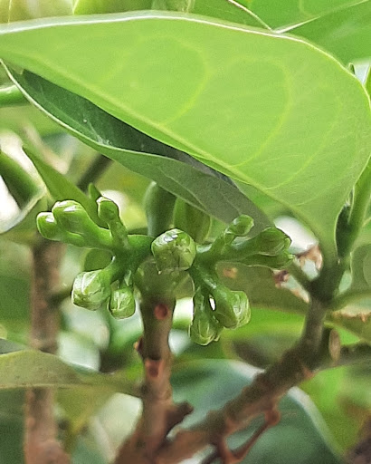
The Green Drone; Anchored Vigilance
An "unrepeatable" instance of organic biomimicry. This archive captures a branching cluster of young buds arrayed like the rotors and sensors of an exploratory quadcopter. It represents the "Value Extraction" of Stationary Flight; proving that true spatial awareness doesn't require constant displacement. Under the protective roof of a dominant canopy leaf, this native explorer sails with the breeze but never loses its coordinate, drawing its processing power directly from the central vascular network.
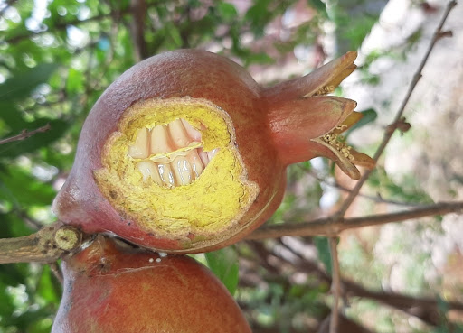
The Grinning Sovereign; The Cheeky Monologue
An "unrepeatable" instance of raw biological humor captured in situ. This archive documents a pomegranate rind broken open by an external force, revealing a row of pale, translucent arils that perfectly mimic a wide, grinning mouth flashing its teeth in a cheeky "eeeeeee..." expression. It represents the "Value Extraction" of Joyful Defiance; proving that when nature's architecture is ruptured, it doesn't display a tragic wound, but rather a playful, unshakeable vitality.
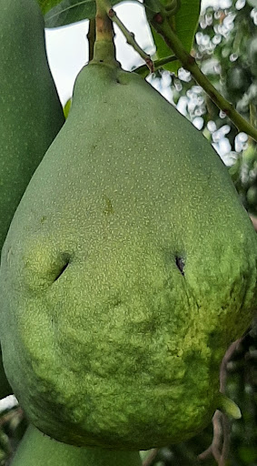
The Sovereign Frown; Integrity in Melancholy
This archive documents a green mango whose early surface scars have expanded into a striking, solemn countenance—featuring heavy, drooping eyes, a textured frown, and a defiant side-tongue protrusion. It represents the "Value Extraction" of Authentic Being; proving that true beauty doesn't conform to standard templates of symmetry. This intersection honors the fortunate coincidence of the stationary seer meeting a form that refuses to mask its raw, rugged reality.
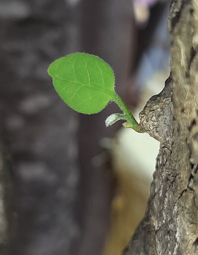
The Epicormic Awakening; Subversion of the Armor
This archive documents a solitary, vibrant green leaf emerging directly from a weathered nodule on the main bark. It represents the "Value Extraction" of Hidden Continuity; proving that no matter how thick or heavy the external armor becomes, the core identity retains an uncompromised capacity for rebirth. This intersection confirms that the most profound expressions of life do not require an established branch—they can carve their own path right through the hardest wood.
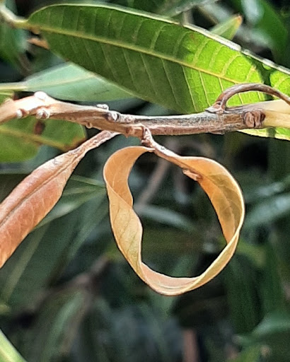
The Asana of Completion; The Spinal Ring
This archive documents a dried leaf that has abandoned its linear plane to curl into a perfect, fluid circle where the tip meets its own base. It represents the "Value Extraction" of Enduring Flexibility; proving that even when the primary internal systems cease full functionality, the structural 'spinal cord' executes a final posture of grace. This intersection reveals a see-through aperture of absolute peace, a geometric continuity that human architecture struggles to replicate without rigid reinforcement.
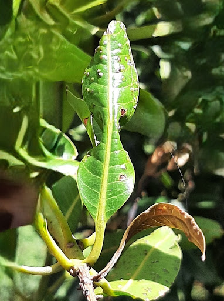
The Constricted Channel; Architectural Redundancy
This archive documents a leaf that has been severely narrowed or segmented in its midsection by environmental pressures, yet maintains perfect vascular and structural continuity. It represents the "Value Extraction" of Redundant Design; proving that nature's System Intelligence bypasses localized constraints to protect the overarching goal post of the organism. This intersection is the ultimate evidence of a truly foolproof survival architecture that thrives within its own anomalies.
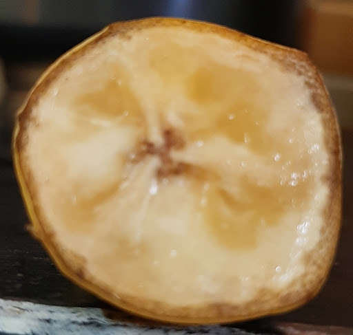
The Old Guardian; The Internalized Sweetness
This archive documents the central carpel walls forming a stern, bold-eyed elder with a heavy, stylized mustache. It represents the "Value Extraction" of Internalized Experience; proving that long exposure to sweetness (the system's core energy) transforms the countenance, changing the cheeks from reactive red to the calm, steady yellow of wisdom. This intersection is a masterclass in organic character design, hidden away until a sharp witness reveals its location.
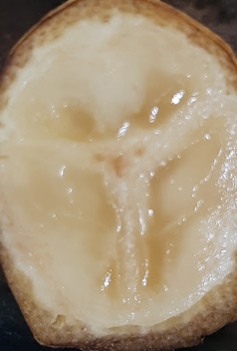
The Ovarian Blueprint; The Origin of Abundance
This archive exposes the primary reproductive anatomy of the plant world. The elegant Y-shaped lines map out the three carpel walls where ovules are generated and protected. It represents the "Value Extraction" of Origin; proving that nature prints its fundamental laws of life-generation directly into the core of its sweetness, completely visible to the witness who pauses to look a second time.
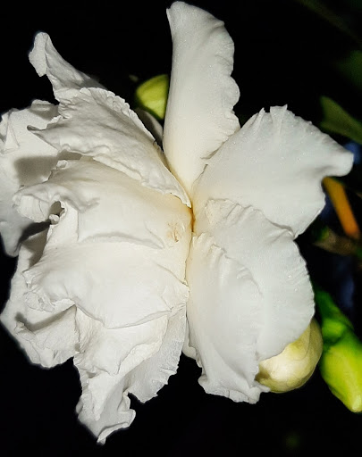
The Alabaster Monarch; Aerodynamics of the Petal
This archive documents a double-petaled blossom whose layered whorls have aligned perfectly to form the sweeping forewings and ruffled hindwings of a pristine white butterfly. It represents the "Value Extraction" of Resonance; proving that nature uses a singular geometric alphabet to script both the flight of the insect and the stillness of the flower. This intersection provides an instant refuge for the exhausted mind, offering a weightless transit through pure form.
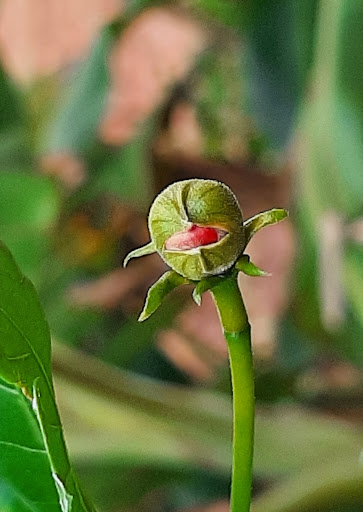
The Crimson-Lipped Marionette; The Centenary of Sight
This centenary archive documents a spherical calyx that has parted horizontally, creating the perfect illusion of a miniature doll's head with a wide, bright crimson mouth singing to the sky. It represents the "Value Extraction" of Inbuilt Joy; proving that nature's survival systems house a playful, celebratory intelligence. This intersection stands as our 100th monument, honoring the stationary witness whose willingness to bend low unearths an entire theater of life hidden within a simple garden bud.
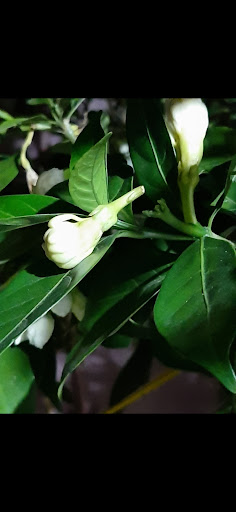
The Alabaster Aeronaut; The Law of Perfect Balance
This archive documents a detached jasmine bud resting horizontally across a living leaf's petiole, maintaining a flawless center of gravity through multiple gusts of wind. It represents the "Value Extraction" of Safe Harbor; proving that when a system is severed from its primary origin, it can find an immediate, touchless alignment on an unexpected platform. It serves as a visual layout of pure trust, where a fragile form finds rest amidst the world's movements.
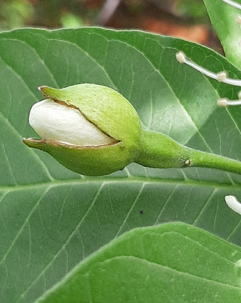
The Reptilian Gulp; The Hunger of Form
This archive documents a guava calyx parting along its horizontal axis to expose the unblemished white corolla within. It represents the "Value Extraction" of Raw Appetite; proving that nature uses the aggressive design language of the hunter (a crocodile's jaw swallowing its prey whole) to execute the peaceful birth of a blossom. This intersection is a masterclass in swift, functional mechanics operating silently against a calm, green backdrop.
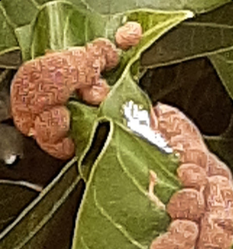
The Canopy Ursine; The Equilibrium of the Host
This archive documents an extensive colony of pocket galls aligning to create the perfect miniature silhouette of a leaping grizzly bear tracking a spherical target. It represents the "Value Extraction" of Cellular Redirection; proving that nature can host an entirely foreign architectural project within its own skin without collapsing the main leaf vehicle. This intersection reveals a foolproof structural tolerance where mass, friction, and cellular adaptation maintain a perfect, silent balance on a single green platform.
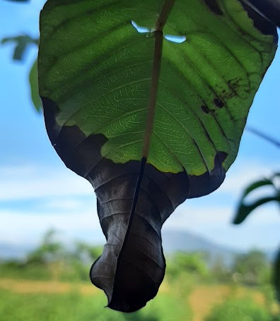
The Altar of the Canopy; The Divine Avatar
A natural sculpture captured during a morning walk on June 11, 2026. A leaf undergoing a localized redistribution phase where the lower section has dried, darkened, and curled into the unmistakable profile of Lord Ganesha, complete with a sweeping trunk and a broad brow. The "Value Extraction" of Grace; proving that a creator's heart seeks validation for their lineage, nature can shape a common blade into an altar of reassurance, projecting a timeless blessing directly against the open sky.
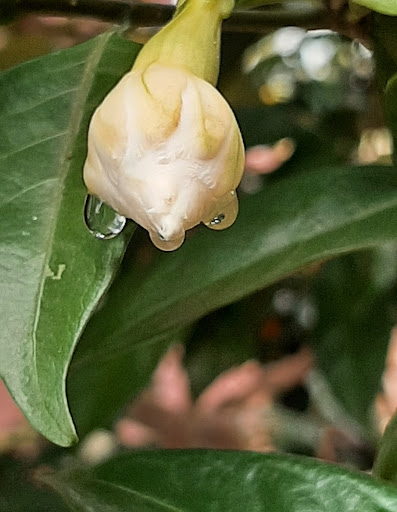
The Alabaster Mermaid; Hydrodynamic Integration
This archive documents an opening corolla whorl where surface tension has held two massive, transparent water droplets perfectly on its lower margins. It represents the "Value Extraction" of Fluid Synergy; proving that a biological system does not merely endure harsh rain conditions, but incorporates the moisture to complete its physical expression. The liquid lenses create the perfect visual layout of glossy cheeks and an open mouth, offering a moment of pure, weightless magic to the exhausted mind.
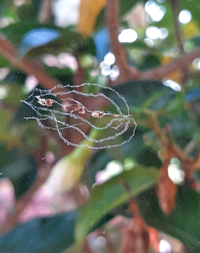
The Silk Acrobat; The Flight of the Vaahan
An "unrepeatable" structural alignment captured live on June 13, 2026, within the garden grid. This archive documents a highly concentrated, horizontal silk decoration suspended mid-air, perfectly executing the shape of a leaping rat with a distinct head, arched back, and trailing tail lines. It represents the "Value Extraction" of Untiring Blueprinting; proving that the architecture of persistence can weave a sacred symbol of momentum directly onto a near-invisible suspension matrix.
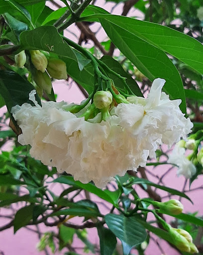
The Solar Chariot; The Seven Horses of Light
An "unrepeatable" instance of synchronous botanical clustering captured at dusk on June 13, 2026. This archive documents an enthusiastic central bud riding atop an expansive, layered white canopy that splits into distinct, galloping petal formations resembling seven horses charging forward. It represents the "Value Extraction" of Illumination; proving that nature prints the ancient architecture of the dawn directly onto a shady branch, transforming a simple cluster into a dynamic engine of kinetic grace.
The Alabaster Biplane; Pre-Human Aeronautics
An "unrepeatable" instance of literal aerodynamic biomimicry. This archive documents a plume moth displaying its signature T-shaped resting geometry across a spherical hibiscus calyx. It represents the "Value Extraction" of Foundational Engineering; proving that the rigid wing spans, structural struts, and forward-canard aesthetics utilized by the Wright brothers were fully operational in the insect world millions of years prior to human industrialization.
The Plantain Antenna; The Duckling at the Crown
An "unrepeatable" instance of living sensory architecture. This archive documents the extreme terminal elongated tip of a plantain leaf blade curling into a precise geometric loop that maps out a wide-eyed duckling head with an open beak. It represents the "Value Extraction" of Sensory Foresight; proving that before a massive leaf expands its full banner to the wind, its leading edge acts as a highly flexible, whimsical instrument navigating the open grid.
The Velvet Teddy; The Playful Transition
This archive documents a post-flowering guava calyx where the persistent, velvety sepals have spread out to form the ears, arms, and legs of a plush teddy bear silhouette. It represents the "Value Extraction" of Gentle Transition; proving that right after a blossom sheds its showy white display, the remaining mechanical shield organizes itself into a comforting, playful posture to shield the nascent fruit growing beneath its vest.
The Canopy Apex; The Tiered Guard
An "unrepeatable" instance of layered structural perspective. This archive documents a post-injury recovery phase where a mature mango leaf's apex has healed into a wide crescent, perfectly framing the emergent leaf below to project the sharp, defensive outline of a crocodile's jaw. It represents the "Value Extraction" of Layered Security; proving that nature uses mechanical scars and accidental leaf overlaps to print an aggressive, predatory warning system within a quiet, stationary canopy.
The Subterranean Cyclops; The Ancient Eye of the Tuber
An "unrepeatable" instance of underground structural geometry. This archive documents a primary corm detachment junction where concentric rings of corky, fibrous tissue have naturally formed the vivid silhouette of a ancient, one-eyed giant staring outward. It represents the "Value Extraction" of Subterranean Storage; proving that nature uses rugged, heavy-cellulose shields to protect the high-energy starch reserves locked beneath the soil matrix.
The Sovereign License; The Infinity Loop of Growth
An "unrepeatable" structural mutation captured live. This archive documents an emergent guava leaf that has undergone a synchronized helical twist, creating the flawless vertical silhouette of the number 8. It represents the "Value Extraction" of Continuous Eligibility; proving that while human systems demand rigid testing before granting passage, nature uses a single fluid gesture to pass its highest structural exams.
The Canopy Oyster; The Open Vault of Origin
An "unrepeatable" instance of post-pollination geometry. This archive documents an expanding guava calyx cup parting its green, velvety margins to fully expose the intricate, mosaic bed of compressed seed structures within. It represents the "Value Extraction" of Inbuilt Wealth; proving that long before a fruit sweetens its pulp for the market, its structural cradle holds a massive, tightly packed network of independent future lines operating in perfect, touchless harmony.
The Canopy Ballerina; The Poise of De-Blossoming
An "unrepeatable" instance of micro-choreography. This archive documents a post-pollination guava bud transforming its remaining structural components into a dynamic human silhouette. It represents the "Value Extraction" of Graceful Transition; proving that when a flower sheds its petals, its remaining structural matrix organizes itself into an unshakeable, poised posture to handle environmental friction.
The Porcine Canopy; The Geometry of Allowance
An "unrepeatable" ecosystem grazing cycle. This archive documents a mature leaf where the terminal apex has transitioned into a dry, paper-textured brown zone, sharply mapping out the playful silhouette of a cartoon pig face. It represents the "Value Extraction" of Ecological Harmony; proving that when a creator allows nature's consumer grid to share its wealth, the canopy responds by printing lighthearted, comforting forms directly against the open sky.
The Joyous Corolla; The Smile of Impermanence
This archive documents a highly pressurized, un-opened jasmine bud where the convoluted petal folds execute the perfect layout of a serene, laughing face. It represents the "Value Extraction" of Timeless Serenity; proving that even when a biological system is positioned directly within a high-grazing insect zone, its internal code prioritizes an expression of absolute lightheartedness and peace before its physical mass is repurposed by the ecosystem.
The Backlit Pegasus; The Sculpture of the Consumer
This archive documents a leaf blade where localized caterpillar skeletonization has scraped away the green mesophyll, leaving behind a pristine, lace-like network of micro-veins that traces a horse leaping through empty sky spaces. It represents the "Value Extraction" of Collaborative Subtraction; proving that nature's consumer grid does not merely destroy mass, but unmask a hidden structural tapestry that is often overlooked.
The Crimson Glamour; The Theater of the Chamber
This archive documents an internal cross-section of a pomegranate fruit where exposed ruby-red seed arils and white pith membranes form the unmistakable face of a pig wearing bright lipstick. It represents the "Value Extraction" of Sudden Manifestation; proving that even within the pressurized, hidden vaults of a fruit core, nature organizes its anatomical components into expressive, theatrical layouts that challenge the consumer's gaze.
The Indignant Mask; The Wrath of the Vault
This archive documents a slice near the fruit's terminal apex where a rigid, circular vascular bundle and an asymmetrical pith indentation form a pair of mismatched eyes, while two compressed crimson arils map out a sharp side-grin. It represents the "Value Extraction" of Sudden Exposure; proving that the internal architectures of nature hold distinct, expressive personality matrices that reveal themselves only when their protective rinds are breached.
The Toasted Garlic Bread; The Halted Blossom
This archive documents an emergent guava flower bud where the outer green sepals remain functional, but the tightly bound white corolla within has transitioned prematurely into a dry, brown, heavily veined texture. It represents the "Value Extraction" of Internal Calibration; proving that nature constantly runs tests on its individual blossom nodes, choosing to pause and seal off specific lines rather than deploying a compromised system.
The Hooded Sentinel; The Physics of the Fall
This archive documents a specialized leaf mutation mirroring a venomous snake's hood, positioned precisely above a white flower bud. It captures the exact spatial event where a neighboring aborted node dropped to the earth during the exposure. It represents the "Value Extraction" of Calculated Release; proving that in nature's system architecture, a plant must drop its unviable lines to clear the physical runway for its protective shields to fully display their geometry.
The Vaulted Interlock; The Architecture of Joint Resistance
An "unrepeatable" structural configuration documenting supreme wind resilience. This archive captures a pair of arch-shaped crepe jasmine leaves that refused to separate under high-velocity wind loads. It represents the "Value Extraction" of Shared Load Distribution; proving that when separate organic units coordinate their physical geometry into a compression arch, their combined surface friction completely nullifies external disruptive forces.
The Canopy Funnel; The Hydraulics of the Drip Tip
An "unrepeatable" instance of micro-fluid engineering. This archive documents an emergent leaf blade utilizing a natural structural fold to gather, measure, and channel rainwater. It represents the "Value Extraction" of Directed Resource Management; proving that long before human systems engineered mechanical funnels to measure out precious fluids, plant architecture had perfected a self-cleaning, touchless liquid track to prevent stagnation across the canopy.
The Vector Heart; The Vishwakarma Draft
An "unrepeatable" instance of geometric perfection. This archive documents an emergent leaf blade whose margins have curled inward with absolute mathematical symmetry, rendering the crisp profile of a heart-shaped funnel. It represents the "Value Extraction" of Sovereign Draftsmanship; proving that nature's developmental aberrations carry a flawless, computer-grade precision that far outmatches human design limits.
The Ghost Umbrella; The Canopy Shadow
An "unrepeatable" instance of midnight geometry. This archive documents a macro cross-perspective where a developing white corolla is flanked by an empty, curved green pedicel and calyx cup that has already shed its blossom. It represents the "Value Extraction" of Residual Protection; proving that even after a neighboring node completes its lifecycle or aborts, its rigid structural remnants remain suspended over the new generation like a silent, protective canopy shield.